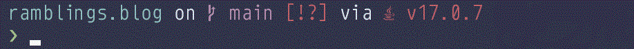
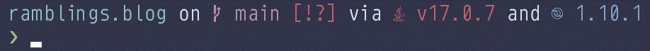

Clojure Scripts
A little while ago, I decided to add a bit of customization to my prompt. I use Starship because I like the look of it, and it's portable between my WSL environment and Powershell for when I need to work from the Windows terminal (not often for personal projects, but fairly often the case at work).
Out of the box, Starship supports quite a few languages and environments, and it will show version information when you're in a project directory. For example, if I'm in a Java project directory, it will show me the version of Java installed on my system:

Here you can see that the prompt is reporting that I'm in a Java project directory and have Java version 17.0.7 installed. Actually, I'm in a Clojure project directory; by default, Starship treats directories containing deps.edn as an indicator to show the Java version.
While that's helpful, I figured it would be even better if I could also show the Clojure version of the project. I fiddled around for a while, and was finally able to come up with the following Starship configuration:
[custom.clojure]
command = '''awk 'match($0, /clojure \{:mvn\/version "(.*)"\}\}/, a) { print a[1] }' deps.edn'''
detect_files = ['deps.edn']
symbol = ' '
format = 'and [$symbol($output)]($style) '
style = 'blue'
The interesting part is the command being executed, which essentially searches the project's deps.edn for clojure {:mvn/version "<something>"}} and extracts the <something>. For reference, the deps.edn may look something like this:
{:paths ["src"]
:deps
{org.clojure/clojure {:mvn/version "1.10.1"}
;; other dependencies
}
That gives me a nice prompt that looks like this:

You can see that in addition to Java version 17.0.7, the prompt also tells us the project is using Clojure version 1.10.1. Mission accomplished, right?
Well, it turns out, you don't technically have to specify the Clojure version in your project's deps.edn. At a minimum, it will always be found in the base deps.edn that was installed with the CLI. Technically, there are three different deps.edn files in play that all get merged together, and the Clojure version could come from any of them.
What I'd need to do in order for the prompt to work properly in all circumstances is to check the project deps.edn for the version, and if it's not there, then check ~/.clojure/deps.edn, and if it's not there, finally fall back to the CLI's /usr/local/lib/clojure/deps.edn. I had a hard enough time figuring out the awk command above, I had no idea how I'd run that command conditionally across multiple files.
But I didn't need to figure that out! I remembered reading about Babashka a while back, and my current problem was a perfect fit for their tagline: "Avoid switching between Clojure and bash scripts." I may not be that great at Clojure, but I'm significantly worse at bash, so why not give it a go?
Here's my script in all its glory:
#!/usr/bin/env bb
(require '[babashka.fs :as fs])
(defn parse-version [deps-edn]
(get-in deps-edn [:deps 'org.clojure/clojure :mvn/version]))
(defn read-deps-edn [path]
(and (fs/readable? path)
(edn/read-string (slurp (str path)))))
(def clj-version (comp parse-version read-deps-edn))
(println (or (clj-version "./deps.edn")
(clj-version (fs/expand-home "~/.clojure/deps.edn"))
(clj-version "/usr/local/lib/clojure/deps.edn")))
First, I defined a parse-version function. Given a deps.edn map as input, it pulls out the Clojure version. Already, I'm reaping benefits: this is doing the same thing as the awk command, but now I'm working with a data structure instead of text, which is a lot more robust. I also find this infinitely more readable (subjective, of course).
Next, I defined a read-deps-edn function. Given a path, if the file at that path is readable, then read it in as EDN and produce a Clojure data structure, or nil if the file was not readable (e.g. it doesn't exist). There may be nicer ways to handle checking if there is indeed a project deps.edn, but this is what I came up with, and it works well enough.
I then compose these two functions to create the function clj-version: calling this function with a path produces the Clojure version in the deps.edn at that path, or nil.
Finally, I output the first Clojure version I find, in order of deps.edn precedence. Nice.
There might be a way to ask the clojure CLI to output the Clojure version it's using (and resolve the different deps.edn locations for me), which I could then just parse, but I couldn't figure out how to do it in any way that performed as well as just parsing the files myself. In any case, I think the above solution is still much nicer than messing around with text directly, and it was a fun little introduction to Babashka.